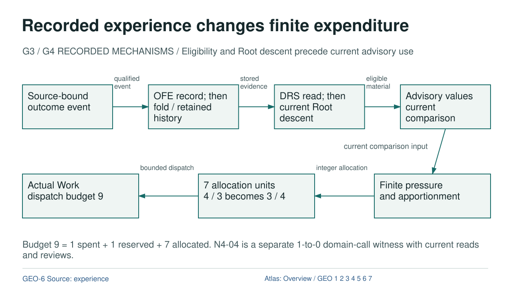

Recorded experience changes finite expenditure

Diagram text equivalent
- Recorded experience changes finite expenditure
- G3 / G4 RECORDED MECHANISMS / Eligibility and Root descent precede current advisory use
- OUTCOME: Source-bound outcome event
- Source-bound outcome event
- OFE: OFE / finite fold retained history
- OFE record; then fold / retained history
- DRS: Current eligible read Root descent
- DRS read; then current Root descent
- ADVICE: Advisory values current comparison
- Advisory values current comparison
- DERIVATION: qualified event
- qualified event
- DATA: stored evidence
- stored evidence
- DATA: eligible material
- eligible material
- PRESSURE: Finite pressure and apportionment
- Finite pressure and apportionment
- ALLOCATION: 7 allocation units 4 / 3 becomes 3 / 4
- 7 allocation units 4 / 3 becomes 3 / 4
- WORK: Actual Work dispatch budget 9
- Actual Work dispatch budget 9
- DERIVATION: integer allocation
- integer allocation
- EXECUTION: bounded dispatch
- bounded dispatch
- DATA: current comparison input
- current comparison input
- Budget 9 = 1 spent + 1 reserved + 7 allocated. N4-04 is a separate 1-to-0 domain-call witness with current reads and reviews.
- rule
- GEO-6 Source: experience
- Atlas: Overview / GEO 1 2 3 4 5 6 7
G3 / G4 RECORDED MECHANISMS / Eligibility and Root descent precede current advisory use
Text Equivalent
Recorded experience changes finite expenditure
G3 / G4 RECORDED MECHANISMS / Eligibility and Root descent precede current advisory use
Source-bound outcome event
OFE record; then fold / retained history
DRS read; then current Root descent
Advisory values current comparison
qualified event
stored evidence
eligible material
Finite pressure and apportionment
7 allocation units 4 / 3 becomes 3 / 4
Actual Work dispatch budget 9
integer allocation
bounded dispatch
current comparison input
Budget 9 = 1 spent + 1 reserved + 7 allocated. N4-04 is a separate 1-to-0 domain-call witness with current reads and reviews.
GEO-6 Source: experience
Atlas: Overview / GEO 1 2 3 4 5 6 7
Exact Relations
- OUTCOME to OFE: DERIVATION, qualified event.
- OFE to DRS: DATA, stored evidence.
- DRS to ADVICE: DATA, eligible material.
- PRESSURE to ALLOCATION: DERIVATION, integer allocation.
- ALLOCATION to WORK: EXECUTION, bounded dispatch.
- ADVICE to PRESSURE: DATA, current comparison input.